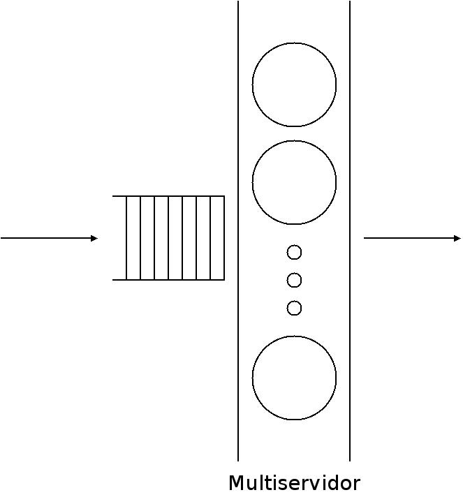
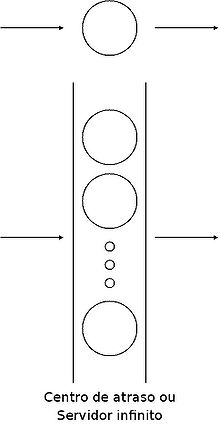
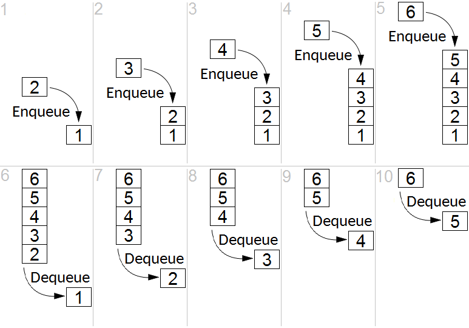

◉ Teorias de filas
A teoria das filas é um ramo da probabilidade que estuda a formação de filas, através de análises matemáticas
precisas e propriedades mensuráveis das filas. Ela provê modelos para demonstrar previamente o comportamento
de um sistema que ofereça serviços cuja demanda cresce aleatoriamente, tornando possível dimensioná-lo de forma
a satisfazer os clientes e ser viável economicamente para o provedor do serviço, evitando desperdícios e gargalos.
• Rede de filas - Conjunto de entidades interligadas que oferecem serviços (centros de serviço) e de usuários
(clientes).
• Centro de serviço - Representa os recursos do sistema, compreendendo um ou mais servidores e um conjunto de
clientes que esperam pelo serviço.
• Fila - Representa os clientes que estão esperando pelo serviço, juntamente com os que estão sendo atendidos
pelos servidores.
• Fila de espera - Somente os clientes que estão aguardando pelo serviço.
Sistema de filas
Uma fila ocorre sempre que a procura por um determinado serviço é maior que a capacidade do sistema de prover
este serviço.
Um sistema de filas pode ser definido como clientes chegando, esperando pelo serviço (se não forem atendidos
imediatamente) e saindo do sistema após terem sido atendidos. "Cliente", em teoria das filas, é um termo genérico,
aplicando-se não somente a seres humanos. O conceito pode abranger, por exemplo, processos esperando para receber
a CPU; pacotes que chegam a um roteador para serem encaminhados; pessoas esperando no caixa do supermercado,
etc.
Aplicações
Existem diversas aplicações da teoria das filas, que podem ser encontradas na literatura de probabilidade,
pesquisa operacional e engenharia industrial. Entre elas destacam-se:
• Fluxo de tráfego (aviões, carros, pessoas, comunicações)
• Escalonamento (pacientes em hospitais, programas em computadores)
• Prestação de serviços (bancos, correios, lanchonetes)
Componentes de um sistema de filas
Um sistema de filas consiste no processo de chegada, da distribuição do tempo de serviço, do número de servidores,
da capacidade do sistema, da população de usuários e da disciplina de atendimento.
Processo de chegada
O processo de chegada indica qual o padrão de chegada dos clientes no sistema. Apresenta comportamento estocástico,
ou seja, as chegadas ocorrem no tempo e no espaço de acordo com as leis da probabilidade; assim, é preciso
conhecer qual a distribuição de probabilidade que descreve os tempos entre as chegadas dos clientes.
A distribuição mais comum é a de Poisson, ou seja, os tempos entre as chegadas são exponencialmente
distribuídos. Entre outras distribuições, estão a de Erlang, hiperexponencial e arbitrária.
Clientes podem chegar simultaneamente (chegada em batch). Se for possível, é necessário também saber a
distribuição de probabilidade do tamanho do batch. A reação do cliente na fila pode variar. Ele pode esperar
independentemente do tamanho da fila, também pode decidir não entrar no sistema caso a fila esteja muito grande
(cliente decepcionado), ele pode esperar na fila mas depois de um tempo desistir e sair do sistema, e também
pode mudar de uma fila para outra em sistemas com servidores paralelos.
O padrão de chegada de clientes em função do tempo pode ser permanente; nesse caso o padrão não muda no tempo,
ou seja, a distribuição de probabilidade que descreve as chegadas é independente do tempo. Também pode não ser
permanente, isto é, o padrão de chegada muda com o tempo. Por exemplo, a chegada de clientes diminui no horário
de almoço.
Distribuição do tempo de serviço
Assim como no processo de chegada, também é necessário conhecer a distribuição de probabilidade do tempo de
serviço, sendo válidas as mesmas distribuições apresentadas.
Os serviços podem também ser simples ou batch.
O estado pode ser independente: o processo de atendimento não depende do número de clientes esperando pelo
serviço. Em contrapartida, em um estado dependente, o processo de atendimento muda de acordo com o número de
clientes na fila. Por exemplo, um servidor pode trabalhar mais rápido quando a fila aumenta ou, ao contrário,
ficar confuso e então mais lento.
Da mesma forma que no processo de chegada, o padrão de serviço pode variar de acordo com o tempo. Por exemplo,
a experiência adquirida com o serviço pode aumentar a produtividade; o cansaço, por outro lado, pode
diminuí-la. Caso não haja variação o padrão é estacionário.

Multiservidor com fila única
Servidor paralelo

Um centro de atraso
Capacidade do sistema
Representa o número máximo de clientes que o sistema suporta, incluindo os que estão em espera e os que estão
sendo atendidos. A capacidade pode ser infinita (mais fácil de analisar) ou finita (por exemplo, número limitado
de buffers em um roteador). Se a capacidade for finita, quando o sistema estiver lotado nenhum cliente pode
entrar até que um cliente saia do sistema, liberando espaço.
População de usuários
Esse componente indica o número potencial de clientes que podem chegar a um sistema. Pode ser finita ou infinita.
Disciplina de atendimento
Descreve a forma como os clientes saem da fila de espera para serem atendidos. Algumas disciplinas são:
• FIFO (First In, First Out): Primeiro a Entrar, Primeiro a Sair). Disciplina mais comum, inclusive na vida
diária. [FIFO também é chamado de FCFS (First Come, First Served): Primeiro a Chegar, Primeiro a ser
Atendido.]
• LIFO (Last In, First Out): Último a Chegar, Primeiro a Sair. Aplicável em sistemas em que o item mais recente
é mais fácil de ser recuperado, como por exemplo em sistemas de controle de estoque. [LIFO também é chamado
de LCFS (Last Come, First Served): Último a chegar, Primeiro a ser Atendido]
• Fila com prioridade: a cada cliente é atribuída uma prioridade; clientes com maior prioridade têm preferência
no atendimento. Pode ser de dois tipos:
• Preemptivo: o cliente com maior prioridade é atendido imediatamente, interrompendo o atendimento ao cliente com
menor prioridade. Ao terminar, o cliente de menor prioridade volta a ser atendido, podendo continuar o processo
de onde parou ou então reiniciá-lo
• Não-preemptivo: o cliente com maior prioridade é colocado no início da fila, recebendo o serviço somente quando
o cliente em atendimento sai do sistema, mesmo se este for de prioridade mais baixa
• Round-robin (algoritmo): cada cliente recebe uma fatia de tempo do servidor (quantum), dentro da qual é
atendido. Após o término do quantum, se a atividade não foi completada, o cliente é retirado e outro passa
a ser atendido. Posteriormente, o cliente que foi interrompido retorna ao servidor e continua a sua
atividade. É muito comum em escalonamento de processos da CPU.
• SIRO (Serve In Random Order): Atendimento em Ordem Aleatória. Indenpendente de um item ser recente ou
estar na fila há mais tempo, as chances de cada um são as mesmas, enfim, a cada momento, um dos itens da fila
será selecionado aleatoriamente.

Notação
As seis características apresentadas acima descrevem um sistema de filas. Para simplificar, utiliza-se a notação
de Kendall, proposta em 1953, composta por uma série de símbolos da seguinte forma:
A/S/m/K/N/Q
Em que:
• A: Distribuição dos tempos entre as chegadas (Processo de chegada)
• S: Distribuição dos tempos de serviço
• m: Número de servidores
• K: Capacidade do sistema
• N: Tamanho da população
• Q: Disciplina de atendimento
Exemplos de sistemas de filas
• M/G/4/50/2000/LCFS
• Processo de chegada exponencial (Markoviano) ou de Poisson
• Distribuição dos tempos de serviço arbitrária (Geral)
• Quatro servidores
• Capacidade para cinquenta clientes
• População de dois mil clientes
• Disciplina de atendimento "Último a Chegar, Primeiro a ser Servido"
• D/M/1/∞/∞/RR
• Processo de chegada determinístico
• Distribuição dos tempos de serviço exponencial (Markoviano) ou de Poisson
• Um servidor
• Capacidade ilimitada
• População infinita
• Disciplina de atendimento Round-robin
Muitas vezes, os três últimos símbolos são omitidos. Nestes casos, assume-se capacidade ilimitada,
população infinita e disciplina de atendimento FCFS.
Exemplo:
• M/M/1
Distribuições de probabilidade
• Exponencial (M)
• Uniforme (U)
• Arbitrária ou Geral (G)
• Erlang (Ek)
Hiperexponencial (Hk)
Leis operacionais
São relações simples que não necessitam de nenhuma hipótese sobre as distribuições dos tempos de serviço
ou dos intervalos entre chegadas. Foram identificadas inicialmente por Buzen em 1976 e posteriormente
estendidas por Denning e Buzen em 1978.
Quantidades operacionais
São quantidades que podem ser medidas diretamente durante um período finito de observação.